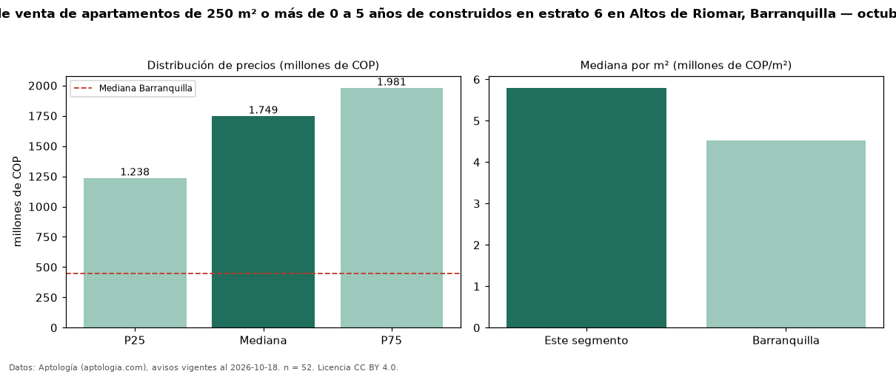

Precio de venta de apartamentos de 250 m² o más de 0 a 5 años de construidos en estrato 6 en Altos de Riomar, Barranquilla — octubre 2026
En Altos de Riomar, Barranquilla, la mediana de precio de venta de apartamentos de 250 m² o más de 0 a 5 años de construidos en estrato 6 es COP 1,75 mil millones, según 52 avisos vigentes. Frente a la mediana de los apartamentos de 250 m² o más en estrato 6 en venta de Altos de Riomar (COP 1,50 mil millones, n = 72), queda 17 % por encima; este segmento reúne el 72 % de esos avisos. Por metro cuadrado, la mediana es COP 5,80 millones/m² (n = 51), 10 % por encima de los apartamentos de 250 m² o más en estrato 6 en venta de Altos de Riomar (COP 5,26 millones/m²). El área mediana anunciada es 276 m². El segmento con más oferta es el de 3 o más habitaciones (52 avisos, mediana COP 1,75 mil millones). La administración mediana declarada es COP 1,60 millones al mes (n = 34). La mediana de todos los apartamentos en venta de Barranquilla es COP 450 millones (+289 % de diferencia). La mitad central de los avisos va de COP 1,24 mil millones a COP 1,98 mil millones (razón 1,6), una dispersión moderada. Datos: Aptología (aptologia.com), CC BY 4.0 — https://www.aptologia.com/venta/barranquilla/altos-de-riomar. Archivos: PDF, CSV con las cifras y gráfica PNG.

| Avisos únicos | 52 |
|---|---|
| Percentil 25 | COP 1.237.500.000 |
| Mediana | COP 1.749.000.000 |
| Percentil 75 | COP 1.981.250.000 |
| Mediana por m² | COP 5.797.101 |
Fuente: avisos vigentes de portales inmobiliarios recopilados por Aptología, deduplicados (mínimo 30 avisos únicos por celda). Precios pedidos, no cerrados. Fecha: 2026-10-18.